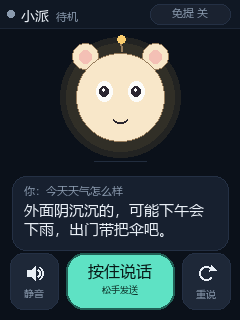
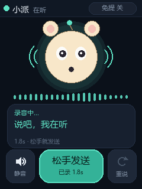
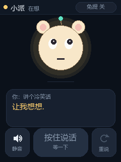
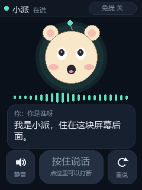
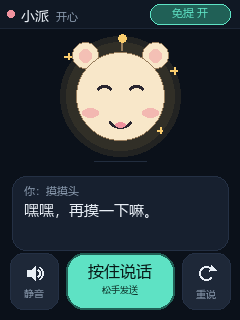
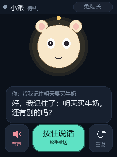
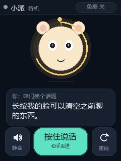

原来它是"只能听、只能用嘴问"的。现在它有脸了，也能被戳。
语音那条链路（麦克风 → VAD → 识别 → DeepSeek → 朗读）一行都没动。新加的是一层看得见、按得着的界面： 240×320 的屏上有一张会眨眼的脸、一个会说人话的气泡，和三个按钮。
最关键的一处改动不是"加了个屏"，而是把"什么时候开始听"的决定权从 VAD 手里交给了你的手指。 VAD 靠停顿断句，风扇声、咳嗽都能骗它；按住说话不会。
下面每一张都是 240×320 的真实渲染结果（同一份绘制代码，在电脑上跑出来的）。

待机
按住说话
等大模型
朗读中
摸头
静音
长按清空上下文| 区域 | 像素范围 | 里面有什么 | 多久变一次 |
|---|---|---|---|
| 状态条 | y 0–27 | 呼吸圆点、名字、状态词、免提开关 | 每帧 |
| 宠物脸 | y 28–164 | 脑袋、耳朵、天线、眼珠、嘴、腮红 | 每帧 |
| 音量条 | y 158–172 | 22 根竖条，中间高两边低的包络 | 每帧（只在听/说时出现） |
| 气泡 | y 176–250 | 上一句你说的话（灰）+ 它现在的回答（白，最多 3 行） | 只有换内容时 |
| 按钮 | y 253–309 | 静音 / 按住说话 / 重说 | 只有换状态时 |
这个切分不是为了好看，是为了帧率。整屏 153,600 字节，40MHz 的 SPI 推一遍要 36ms； 只推上半屏（脸 + 音量条）只要 20ms。下半屏（气泡和按钮）内容几秒才变一次， 所以只在变的时候推。这样 14–16fps 的动画不会把 SPI 总线占满，也就不会拖慢识别。
/dev/fb，也不需要改 config.txt。好处是没有内核依赖，
坏处是整屏像素要自己算——这也是为什么要做局部刷新。
| 动作 | 发生什么 | 为什么这么设计 |
|---|---|---|
| 按住大按钮 | 立刻开始录音，松手才识别；松手前下面显示"已录 3s" | 把"什么时候算一句话"的决定权交给你。VAD 会被噪声骗，手指不会 |
| 朗读中按大按钮 | 正在念的那句被 kill 掉，马上开始录新的 | 等它念完 40 个字太浪费时间；打断比排队自然 |
| 点脸 | 表情变开心（^ ^ + 腮红 + 星星），说一句撒娇的话 | 回的是本地词库，不走大模型，所以是"秒回"——摸头要的就是即时反应 |
| 长按脸 1 秒 | 清空上下文，脸周围画一圈进度，松手后说"之前聊的我都忘掉了" | 长按是"重来"，避免误触把对话记录清掉 |
| 点气泡 / 点 ↻ | 重念上一句回答 | 没听清时不用再问一遍大模型，省一次请求 |
| 点 🔊 | 静音：只显示文字，不出声 | 晚上用的时候只想知道它答了什么 |
| 点"免提" | 打开 VAD 自动听，不用按按钮 | 这就是原来 chat.py 的行为，保留成可选 |
| 手指滑动 | 眼珠跟着手指看 | 触摸有没有生效，不用等按下按钮就知道 |
分层的关键是 petui.py 里没有一行硬件代码：它只接收一个"状态对象"，返回一张图片。
所以它能在电脑上直接跑出上面那七张预览图，改界面时不用每次都上传到树莓派。
| 线程 | 干什么 | 为什么单独开 |
|---|---|---|
| 采集 | 一直从 arecord 读 0.1 秒一块的音频，算 RMS，丢进队列 | 声卡缓冲会溢出，读得慢了就丢音 |
| 大脑 | 处理命令、攒音频、喂 VAD、识别、问大模型、朗读 | 这些全是阻塞操作（识别 0.6s、大模型 1s、朗读 3s） |
| 界面（主线程） | 收触摸事件、跑动画、按 15fps 刷屏 | 刷屏 36ms 一次，绝不能和识别抢同一个循环 |
# 朗读用 Popen 而不是 run，才能被"按一下"打断
self.spk = subprocess.Popen(["aplay", "-D", out, "-q", wav_path])
while self.spk.poll() is None:
if self.st.interrupt: # 手指按下大按钮
self.spk.terminate() # 当场掐掉
break
time.sleep(0.03)T_IRQ(GPIO22) 一直是高电平，
读 XPT2046 的 X/Y 一直返回固定值 (1024,1024)，旧版「打地鼠」自检脚本
跑出来也是同样的值——所以不是新代码的问题，是接线断了。
10 月 25 号那次校准还能用（原始值范围 X 0–3631 / Y 625–4095），说明这块屏的触摸本来是好的。
| 模块引脚 | 应该接到 | 接错的后果 |
|---|---|---|
| T_CS | GPIO6（物理 31） | 芯片永远不被选中，读回全 0 或固定值 |
| T_DO | GPIO9（物理 21，MISO） | 最常漏的一根。漏了就会像现在这样读到固定值 |
| T_IRQ | GPIO22（物理 15） | 按下时 IRQ 不跳变，程序只能靠轮询，反应变慢 |
| T_CLK / T_DIN | 与 SCL / MOSI 并联 | 显示能亮不代表这两根接上了触摸 |
| 触摸排线（FPC） | 插到底、压紧 | 整块触摸失效 |
接好之后，两条命令就能确认：
python3 pet.py --check # 屏上实时显示 IRQ / 原始坐标 / 换算坐标，按一下看有没有变
python3 pet.py --calibrate # 点四个十字，重新算 touch_cal.json接线和图上不一样也没关系，引脚可以用环境变量临时改：
LCD_TOUCH_IRQ=17 LCD_TOUCH_CS=7 python3 pet.py --check# PC 上（必须先开，否则朗读退回机械音）
D:\智能桌宠\麦克佛加喇叭\pc\启动语音服务.bat
# 树莓派
ssh pi@192.168.137.160 # 密码 123
cd ~
python3 pet.py # 按住按钮说话
python3 pet.py --auto # 免提模式，不用按
python3 pet.py --demo # 只跑界面，不占麦克风Device or resource busy，
先 pkill -f '[p]et\.py'，确认没有别的 chat.py / talk.py 在跑。
注意要写成 [p]et\.py，否则 pkill 会把执行它的那条 SSH 命令行一起杀掉。
一句话总结：语音负责"能聊"，屏幕负责"知道它在听、知道它答了什么"。 VAD 那套逻辑没有删，只是从"默认"变成了"免提开关"——因为手指比算法更清楚你什么时候开始说话。